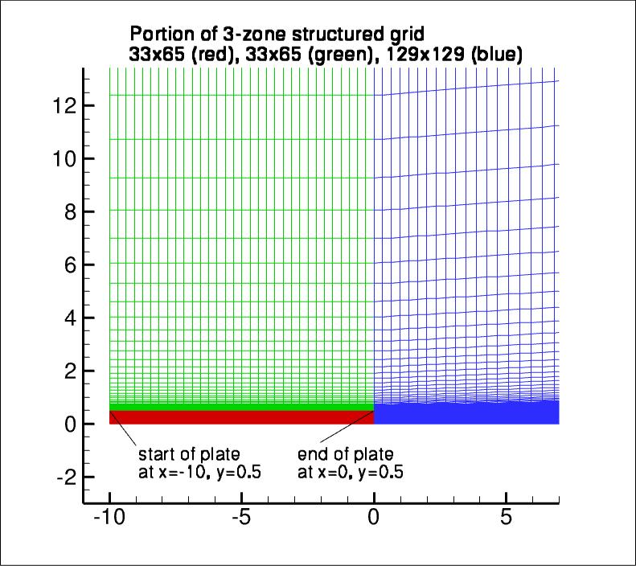

|
Langley Research CenterTurbulence Modeling Resource |
Return to: 2D Coflowing Jet Verification Case Intro Page
Return to: Turbulence Modeling Resource Home Page
Grids - 2D Coflowing Jet Verification Case
A series of 5 nested 2-D grids are provided. As structured grids, these are comprised of 3 zones, connected in
a one-to-one fashion.
Each coarser grid is exactly every-other-point
of the next finer grid, ranging from the finest 129 x 257, 129 x 257, 513 x 513
to the coarsest 9 x 17, 9 x 17, 33 x 33 grid.
The finest grid has minimum spacing at the wall of y=0.000235, while the
coarsest has y=0.005072.
The grid is stretched in the wall-normal direction.
In the wake region, the normal-direction clustering relaxes and the streamwise grid spacing
gradually increases downstream.
Note that this case was previously referred to as a 2D Planar Shear, but it is
more appropriately referred to as a 2D Coflowing Jet. Some of the figures associated with this
case may still have the word "shear" in them.
The following figure shows a portion of
the 33 x 65, 33 x 65, 129 x 129 grid (2 levels down from the finest grid):

Note: be sure to use double precision when reading the grids!
STRUCTURED VERSIONS OF
GRIDS
PLOT3D Files
The structured PLOT3D grids are given in two different ways, as 2-D grids (x-y plane) or as 3-D grids (two
identical x-z planes, separated by a distance y=1,
giving one spanwise cell for all grid levels). You may use whichever is more convenient for your particular
application.
Format for the structured 2D grids is PLOT3D-type, formatted, MG, 2D (nbl=3) - note that you
must use double precision when reading! :
read(2,*) nbl
read(2,*) (idim(n),jdim(n),n=1,nbl)
do n=1,nbl
read(2,*) ((x(i,j,n),i=1,idim(n)),j=1,jdim(n)),
+ ((y(i,j,n),i=1,idim(n)),j=1,jdim(n))
enddo
Download the 2-D version of the grids in PLOT3D format here:
Format for the structured 3D grid is PLOT3D-type, formatted, MG, 3D (nbl=3, and idim in this case is 2) - note that you must use double precision when reading! :
read(2,*) nbl
read(2,*) (idim(n),jdim(n),kdim(n),n=1,nbl)
do n=1,nbl
read(2,*) (((x(i,j,k,n),i=1,idim(n)),j=1,jdim(n)),k=1,kdim(n)),
+ (((y(i,j,k,n),i=1,idim(n)),j=1,jdim(n)),k=1,kdim(n)),
+ (((z(i,j,k,n),i=1,idim(n)),j=1,jdim(n)),k=1,kdim(n))
enddo
Download the 3-D version of the grids in PLOT3D format here:
If desired, example Neutral Map Files associated with 3-D version of the grids are given here (these files specify grid indices associated with each boundary condition - see The Neutral Map File):
CGNS Files
The structured grids are also available as CGNS files (3-D versions only, with two identical x-z planes, separated by a distance y=1, giving one spanwise cell for all grid levels). Note that the BCs written inside the CGNS files are for guidance only, and may not reflect the appropriate BCs needed for your application. To read/write CGNS files, (free) software may be necessary if your pre/post-processing tools do not already handle it. See: CGNS Website for details.
Download the 3-D version of the grids in CGNS format (gzipped) here:
UNSTRUCTURED VERSIONS OF GRIDS
CGNS and AFLR3 Files
The unstructured versions of the same grids are all given as CGNS and AFLR3 (UGRID) files. Note that the BCs written inside the CGNS files are for guidance only, and may not reflect the appropriate BCs needed for your application. To read/write CGNS files, (free) software may be necessary if your pre/post-processing tools do not already handle it. See: CGNS Website for details.
The unstructured grids are all given as 3-D grids (two identical x-z planes, separated by a distance y=1, giving one spanwise cell for all grid levels). They are given here only as hexahedra (quadrilaterals in the x-z plane).
Download the unstructured CGNS grids (gzipped) as 3-D hexahedra (quadrilaterals in x-z plane) here:
Download the unstructured AFLR3 grids (gzipped) as 3-D hexahedra (quadrilaterals in x-z plane) here:
Return to: 2D Coflowing Jet Verification Case Intro Page
Return to: Turbulence Modeling Resource Home Page
Recent significant updates:
10/02/2023 - added AFLR3 (UGRID) versions of unstructured grids
Responsible NASA Official:
Ethan Vogel
Page Curator:
Clark Pederson
Last Updated: 10/02/2023